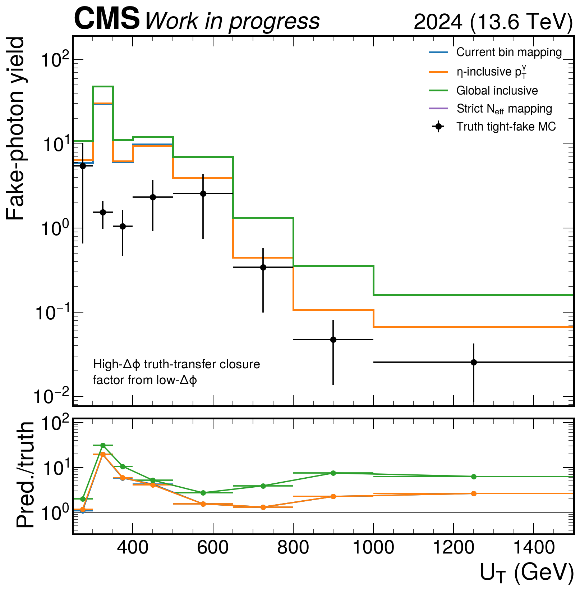
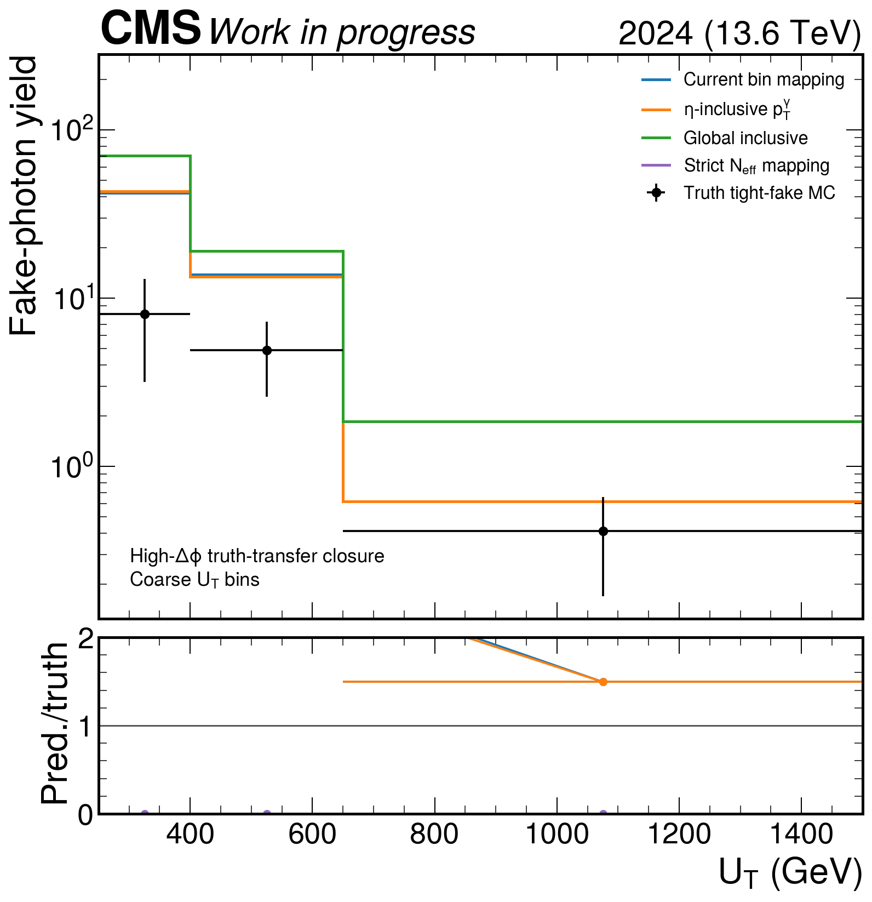
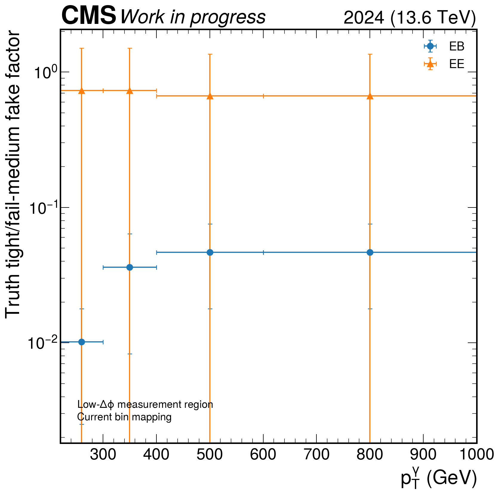

Diagnostic only. Template fits are not used. Nominal intermediates are unchanged.
The fake factor is measured from truth-fake MC in GCR_DPhiVR_Low and applied to truth-fake fail_medium photons in GCR_DPhiVR_High.
| Mapping | Prediction | Truth | Pred./truth | Loose coverage |
|---|---|---|---|---|
| current_mapping | 56.6113 | 13.3923 | 4.227156712900457 | 1.0 |
| eta_inclusive | 57.2576 | 13.3923 | 4.275418070609646 | 1.0 |
| global_inclusive | 91.3911 | 13.3923 | 6.824162397734955 | 1.0 |
| strict_stable | 0 | 13.3923 | 0.0 | 0.0 |



| Group | Factor | Tight Neff | Sideband Neff | Stable |
|---|---|---|---|---|
| ALL_inclusive | 0.27606048057746774 | 1.39 | 11.6 | False |
| EB_inclusive | 0.046628856052076575 | 4.41 | 6.53 | False |
| EB_pt220to300 | 0.010166197879715563 | 3.47 | 3.56 | False |
| EB_pt220to400 | 0.03610783191918507 | 2.44 | 5.43 | False |
| EB_pt300to400 | 0.14106208154207478 | 1.52 | 11.9 | False |
| EB_pt400to600 | 0.17486014118592527 | 2.79 | 49.2 | False |
| EB_pt400toinf | 0.15604859824721024 | 3.89 | 79.9 | False |
| EB_pt600toinf | 0.10325287962352633 | 2.35 | 47.3 | False |
| EE_inclusive | 0.6659419572850702 | 1.12 | 5.39 | False |
| EE_pt220to300 | 2.4925648038605392 | 1 | 2.18 | False |
| EE_pt220to400 | 0.7296145059638931 | 1.11 | 4.51 | False |
| EE_pt300to400 | 0.052958325603872036 | 2 | 2.8 | False |
| EE_pt400to600 | 0.0016943976074952794 | 1.82 | 6.05 | False |
| EE_pt400toinf | 0.004947196417100661 | 3.46 | 7.07 | False |
| EE_pt600toinf | 0.043827279934889114 | 2 | 8.46 | False |